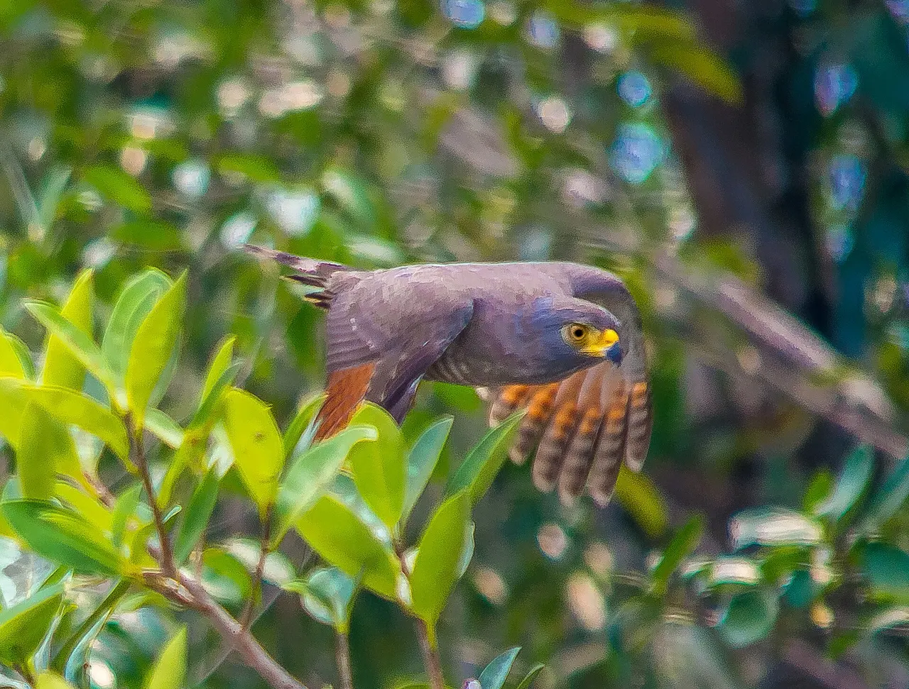

Módulo 3 Aula 14
Leme, freio e detalhes
Além das asas, a ave voa com a cauda e com pequenos detalhes nas penas. Eles decidem a diferença entre uma curva bem feita e uma queda.
- Como a cauda funciona como leme e freio
- Para que serve a álula
- O que são as pontas de asa com fendas

Ave da aula
Gavião-carijó Rupornis magnirostris
A cauda
A cauda de uma ave não é enfeite. Um estudo clássico de aerodinâmica mostrou que a sustentação que ela gera cresce com o quadrado da largura máxima da cauda, e não com a área, como numa asa comum[1]. Uma cauda em forquilha, aberta em um triângulo de pouco mais de 120°, é muito eficiente para controlar a subida, a descida e as curvas[1]. As fragatas, por exemplo, usam a cauda longa para dirigir[5]. Experimente abrir e fechar a cauda do desenho.
Modelo didático. Só a tendência é real: os valores não são medidas[1, 2].
Álula
Na frente da asa, perto do pulso, há um pequeno grupo de penas presas ao “polegar” da ave: a . Ela é conhecida por ajudar em voos lentos e em ângulos altos, como na hora de pousar, quando a asa está muito inclinada e corre o risco de estol[3]. Estudos mostram que ela aumenta a sustentação e muitas vezes atrasa o estol, mas o mecanismo exato ainda é discutido[3].
Escolha um grupo de penas.
Esquema didático de uma asa aberta, vista de cima.
Pontas com fendas
Olhe a ponta da asa de um urubu ou de um gavião: as penas se abrem como dedos. Essas penas têm um recorte nas bordas, a , que permite que elas se separem. Esse formato reduz o arrasto que a ponta da asa cria quando ela gera sustentação[4]. Curiosamente, aves de planeio muito especializadas, como as de asas longas e estreitas, costumam resolver o mesmo problema com asas longas em vez de fendas, e há aves com fendas que nem planam[4].

Palavras novas
Teste rápido
Sem nota. Se errar, tente de novo.
O que acontece quando a ave abre bem a cauda?
Onde fica a álula?
Para que servem as pontas de asa com fendas?
Referências e leitura complementar
Onde conferir o que foi dito nesta aula. Os números entre colchetes no texto levam a estas fontes. Os links abrem em outra aba.
- On the aerodynamics of birds' tailsPhilosophical Transactions of the Royal Society B (1993) · inglêsEstudo clássico sobre a cauda como leme, freio e fonte de sustentação.
- High aerodynamic lift from the tail reduces drag in gliding raptorsPubMed Central (artigo científico) · inglês · leitura complementarComo a cauda ajuda a planar.
- The Function of the Alula in Avian FlightScientific Reports (Nature) · inglês · leitura complementarEstudo sobre como a álula ajuda no voo lento e adia o estol.
- Multi-cored vortices support function of slotted wing tips of birds in gliding and flapping flightJournal of The Royal Society Interface · inglêsAs pontas de asa com “dedos” reduzem o arrasto.
- Magnificent Frigatebird Life HistoryAll About Birds · Cornell Lab of Ornithology · inglês · leitura complementarVoo e comportamento da fragata.
- Everything You Need To Know About FeathersBird Academy · Cornell Lab of Ornithology · inglêsEstrutura da pena: cálamo, raque, barbas e bárbulas, e os tipos de pena.
Os endereços foram abertos e conferidos em 29/09/2026. Alguns sites de revistas científicas e de órgãos oficiais exigem verificação humana e não puderam ser testados por robô. Sites externos podem mudar ou sair do ar.
Para levar
Em três frases
- A cauda funciona como leme e como freio: aberta, oferece mais superfície ao ar.
- A álula, um pequeno grupo de penas na frente da asa, ajuda em voos lentos e em ângulos altos, como na hora de pousar.
- As penas das pontas das asas, separadas em fendas, ajudam a reduzir o arrasto em muitas aves.